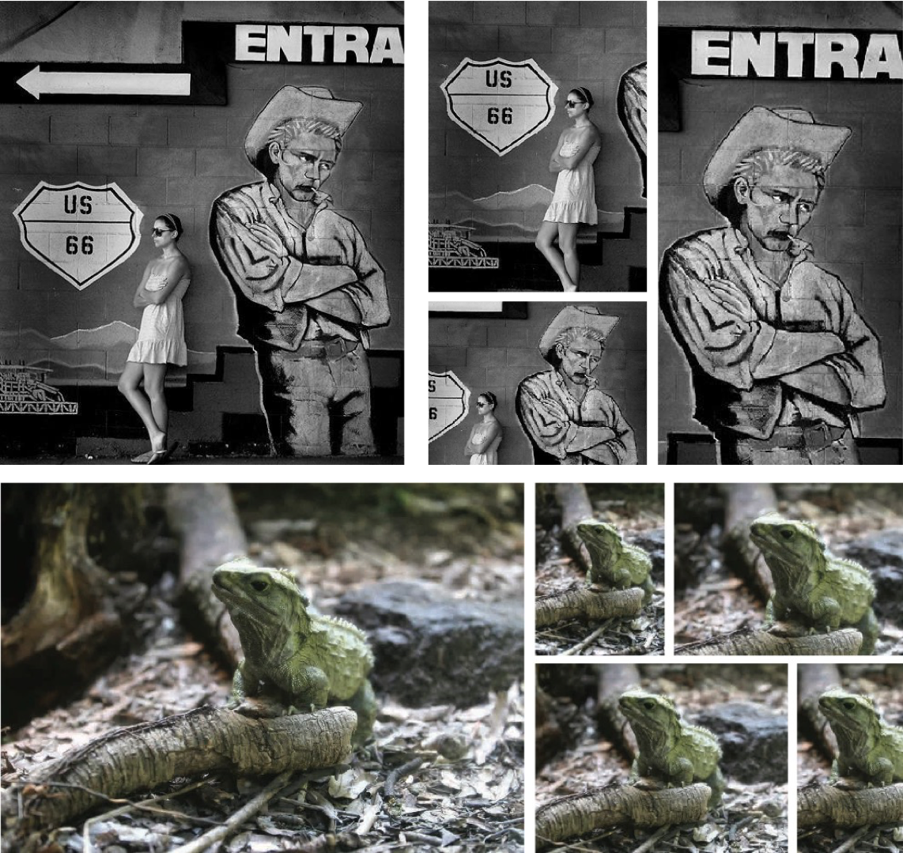

Finding views with good photo composition is a challenging task for machine learning methods. A key difficulty is the lack of well annotated large scale datasets. Most existing datasets only provide a limited number of annotations for good views, while ignoring the comparative nature of view selection. In this work, we present the first large scale Comparative Photo Composition dataset, which contains over one million comparative view pairs annotated using a cost-effective crowdsourcing workflow. We show that these comparative view annotations are essential for training a robust neural network model for composition. In addition, we propose a novel knowledge transfer framework to train a fast view proposal network, which runs at 75+ FPS and achieves state-of-the-art performance in image cropping and thumbnail generation tasks on three benchmark datasets. The superiority of our method is also demonstrated in a user study on a challenging experiment, where our method significantly outperforms the baseline methods in producing diversified well-composed views.

Real-time suggestions for different stories over different aspect ratios
Contributions
Two datasets with dense views comparisons [See Resources]